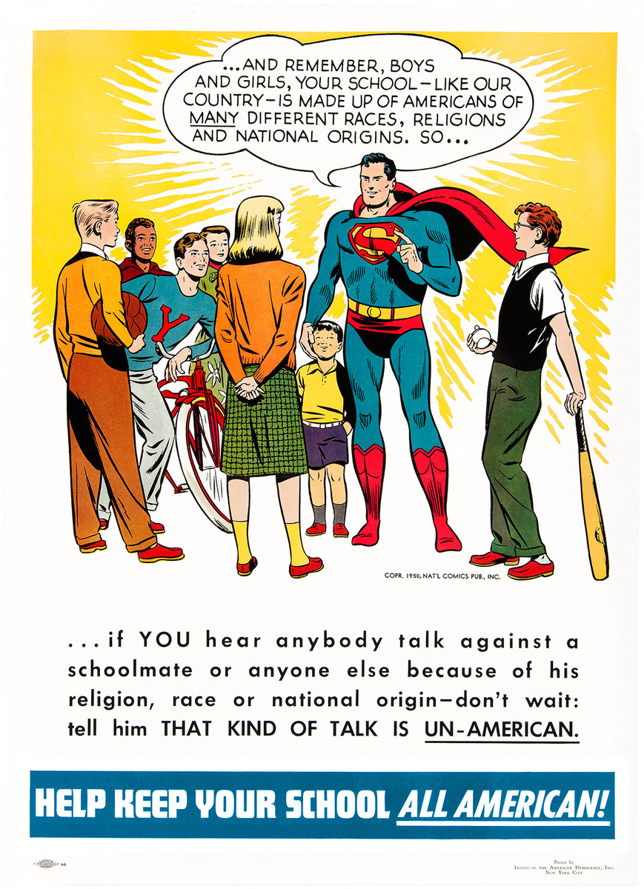
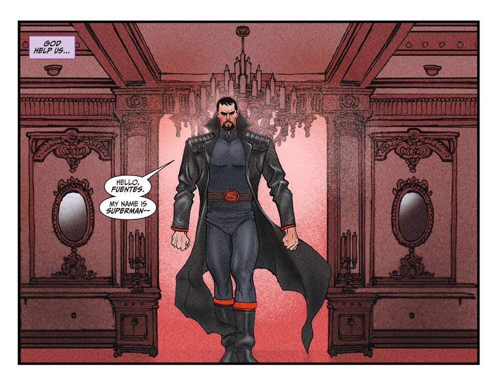

Superman, the embodiment of American Values, the beacon of Conservatism and Americana.Being used to push a political agenda that is the complete opposite of who he is as a character.
Just to be expected. Superman the embodiment of conservative American values can’t be a conservative or believe in conservative values in today’s world.Because GOD FORBID Superman stand for something!
Rather than flowing with the tide of the liberals who own the rights to him!
Hey do you know who Jerry Siegel and Joe Schuster are?
Superman’s very first story literally dubs him “Champion of the Oppressed.” He stops a wife beater from killing his wife and threatens a lobbyist.
Superman has literally never been a beacon of conservatism. Superman is meant to be an ideal. He’s aspirational. And he’s a goddamn immigrant created by two Jewish men who were the sons of immigrants.
Superman is not just a refugee, he’s an undocumented immigrant. Just because he’s white-passing and enjoys Ma Kent’s apple pie, that has never meant that he is not a refugee or an undocumented immigrant.
Though I hesitate to use the term because no human beings are illegal, he is quite literally an illegal alien.
Yeah, Space Moses is totally the champion of conservatism.

His arch enemy is a billionaire who later became President, for Rao’s sake.
Let us not forget the Of Gods and Monsters universe where he was adopted by Mexican immigrants instead of the Kents

I think that this is being a bit unreflective of what “conservatism” means in the modern world.
To imagine that such a thing as “truth, justice, and the American Way” – indeed even any one of those ideas – is something to protect? That is conservative against the tide of progressives and SJWs.
To speak of unity and of racism being un-American, rather than stoking the fires of Maoist self-criticism? The same.
And as to his actual position… He seems to be established as being very aggressive, but very, very un-radical. At least in the popular view of Superman (no idea if this matches up with the endlessly stacked wierdness in eighty years of Comic Book Superdickery), he’s essentially somebody who attacks corruption, crime, and reactionary evils from the right.
Or, as is true in many cases, “right” and “left” are not useful categories for analyzing any of this art.
Yeah, that’s actually what I’m trying to get at.
“punch fascists and Lexcorp to bring down late-stage capitalism” is a very different expression from “punch fascists and Lexcorp to defend the American people from their depredation”.
This, and your previous post in the thread, are not…good analyses of Superman. More importantly, they’re not good analyses of people on the left generally – they fall into the same errors that you see from the kind of leftists who yell about how all conservatives are animated primarily by their hatred of women and minorities.
I promise you, both “truth” and “justice” are leftist buzzwords every bit as much as they’re rightist buzzwords. There are a vanishingly small number of actual postmodernist types who believe that “truth” and “justice” are just instantiations of phallocentric Western oppression-speak, but…well, let’s say they’re akin to the vanishingly small number of actual pure-tribalist types who are willing to say “yep, only Our Folk matter, and we’ll laugh while we watch outgroup children being burned alive.”
(Even “the American Way” is pretty damn popular on the left. “We are too cool and cosmopolitan to love our country” is way more stereotype than truth. I spent part of this just-past July 4th at a barbecue containing no shortage of social-justice-y types, and there sure was plenty of American-flaggery and “USA! USA!” and suchlike. Speaking as someone who is himself disgusted by nationalist sentiment, and who is solidly embedded in the Blue Tribe, this is annoying…but there you have it.)
And if you think the folks on the left want nothing more from their escapist and aspirational art than an eternal circlejerk of “Maoist self-criticism,” rather than a fantasy of strong unified beautiful heroism that is also anti-racist and anti-sexist etc. etc. – well, you haven’t been paying the slightest attention to leftists talking about art on the Internet.
You’re letting your frustrated stereotypes run away with you here.
But that’s boring. Let’s talk about superheroes.
[NOTE: Everything I’m about to say about Superman applies, even more strongly, to Captain America. Cap is explicitly an avatar of national ideals; Superman is kinda that thing, complicated by his status as “alien outsider whose existence as a human is a commentary on the entire species.”]
Mandatory up-front disclaimer: yes, yes, this is a character who has been reinterpreted in countless ways and taken on countless different narrative roles in his coming-up-on-a-century of mythical existence, there is no single “true Superman” and there are plenty of counterexamples to everything. But there is a core understanding of what the character means, a cultural consciousness that hovers over every portrayal and from which all deviations deviate.
You’re 100% right to say that Superman is not a radical. The people who portray him as a communist or a crypto-communist are engaging in a lot of wishful thinking. I’ll go further than that – a lot of the arguments used to present him as Definitely a For-Reals Leftist, like “he cares about poor people” and “he is (unlike Captain Atom) sometimes willing to stand against the military-industrial complex,” are stupid arguments that reflect a very poor understanding of what separates leftism from its rival ideologies.
This does not actually add up to him being a conservative. And, given key elements of his central narrative, I think it’s actually very hard to spin him as that thing. Nor does it add up to him being an apolitical symbol of American glory, a thing that he can’t be given the extent to which “being used to illustrate the actual content of the American Way” is in his conceptual DNA.
Superman is a mainline centrist liberal.
It’s important that, while he was raised on a farm in Kansas – and while he loves Ma and Pa Kent, and honors their lifestyle – he himself moved to the big city to take a creative-class job, and he dwells in a Fortress of Solitude rather than being embedded in a tight-knit culturally-thick community. He spends basically none of his time propounding or defending classic culturally-American folkways, traditions, etc. Rather, he fights for America-the-land-of-abstract-theoretical-ideals. Over and over again, he takes a stand for the stranger and the outcast. He is absolutely fucking obsessed with civil liberties. He reliably interprets “the rule of law” as being defined primarily by procedural checks on the government and other powerful institutions, rather than as being a mechanism used to control low-level individual behavior.
He’s not just punching fascists and Lexcorp and green-eyed space monsters; he’s punching the Klan, and other liberal bugbears. Lex Luthor could be written as an Evil Coastal Elite Liberal stock character, and in fact you got that in the recent Zack Snyder movies where he was portrayed as a very-thinly-veiled Mark Zuckerberg, but he’s far more often written as an Evil Republican Tycoon who is rapaciously avaricious rather than callow and status-obsessed.
(You can make a much better case for conservative-Batman.)
So to disagree with everything balioc said here (about comics that is. He’s right that the bugaboo stereotype of “you care about truth so you can’t be in political movement X” is bullshit.)
It’s a lot more about what you mean by each political ideology. Because usually superheroes aren’t ideological.
Superheroes are indeed avatars of political and philosophical ideals. But what they don’t do is compromise. They have some thing they care about and every single page they are on is about fighting for that ideal 100% and anyone who tells you that you must accept any less is a sellout, a traitor, or probably a psychotic illusion produced by your nemesis’s mind control rays. This sure is Superman.
There are many political movements that also look down on compromising. We call them “fringe.” But any mainstream movement with an ounce of power has had to relent some. You gotta appeal to the moderates to get votes. You can’t speak badly about Leader (or Pundit Celeb) because the Other Side will just use it as ammo against them. There’s only so much government can do.
Even if you aren’t an elected, just look at basic tumblr-level discussion. Real leftism wants economic distribution now. And yet, we’re not gonna have that. So we wrestle with contingent prejudices and symptoms of the capitalist machine, just so we can help people now instead of holding our breath until the revolution comes. Which is fine (and 99% of proposed revolutions would be terrible anyway.)
And while the political movements wear many masks and have as many doctrines as there are believers… one of the more reliable strains of thought has been that the leftists are naive idealists and the conservatives are the practical, cautious rulers. You’ve got Edmund Burke as the founder of the school, Chesterton’s Fence, the incentives implicit in the hegemonic ruling class, every anti-Marxist school of philosophy, etc.
(Now there are indeed radical fascists and radical libertarians who want to tear everything up and start over. And there are centrist liberals who are pretty afraid of radicalism. Both of whom are over-represented on online discussions though, and historically at least “gradualism vs radicalism” mapped pretty well to how the public understood right vs left.)
If Superman saw a sick girl, dying of a treatable disease, he would indeed tear up the entire foundations of the economic system if that is what it took to make her better. If he saw refugees dying as they tried to get to America, he would commandeer some boats and get them to America. If you even said the words “acceptable collateral damage” regarding a military action to Superman… god have mercy on your soul.
Which is to say, many leftists will see his rhetoric and feel it speaks to them. Not just in the sense of “well I like truth and justice” but in the sense of “no pre-existing system of power should be allowed to interfere with truth and justice.” Some right-wingers will like it too, but not as many, and in a pretty amorphous sense (those are our colors!) It will be harder for them to find quotes that fit their political needs just right (though not impossible.)
This is basically the exact same situation with Jesus and Christianity. On one hand, most American Christians are right wing. And certainly educated members of either side of the divide can quote the bible. But among “intelligent people who only have a passing familiarity with the subject” the ethical absolutism of the bible has some really compelling examples that sound like left wing communism. Jesus is a pretty easy icon for them to appropriate when they want to. (Whether that works in convincing anyone or not, well, tells you about the limits of symbolism vs material incentives.)
Ideology, remember, is the result of our need to reconcile ethical principles with a profoundly unaccommodating and complicated world. It’s the accumulation of all the times you misperceive the world so it fits with your moral schemas and you bend your ethics to get along in the world and the story you tell to make that all work. Superheroes, the really grand exalted mythic ones never have to do that. The world bends to them (and the world never proves them wrong.) They can just go on being a radical who never really pays the cost for their idealism, the way most early-twenties leftist protesters want to be.
It’s a lot more about what you mean by each political ideology. Because usually superheroes aren’t ideological.
True, but when they are it matters, especially for superheroes like Superman and Cap who explicitly (at least in part) stand for ideological concepts. You can’t be the Defender of the American Way without at least implicitly commenting on what the American Way is. And Superman does that thing, a lot.
Beyond that…this is essentially a fully-general argument saying “leftists care more about [super]heroes than conservatives do.” And maybe that’s true, a little bit, in some kind of 55-45 kind of way; I don’t purport to have that granular an understanding of the cultural zeitgeist. But the thing you’re trying to do here involves badly misreading what actual conservatives care about, I’m pretty sure, as much as @thathopeyetlives was misreading what leftists care about.
historically at least “gradualism vs radicalism” mapped pretty well to how the public understood right vs left.
Historically? Maybe, maybe. But for present purposes this is some obfuscatory bullshit.
Conservative voice: Leftists keep saying that we have to compromise with the devil, that we have to go along to get along, that we have to move with the times. They keep telling us to accept the degradation of our families and our communities and our souls because that’s just what the world demands right now, that the only choice is the choice between two evils. We have to accept masturbatory anomie because that’s the price of technology. We have to accept crime and cruelty because that’s the price of diversity and acceptance. We have to accept the murder of children because that’s the price of autonomy. Well, I say no. I say that we know what the righteous life looks like, and that’s how we’re going to live. I say that we’re going to do the right thing, the decent thing, no matter what. No deal. No compromise.
…because, seriously, man, everyone’s fantasy is “no compromise.” And, as you say, that’s a big part of what superheroes offer – to everyone.
And, indeed, you don’t have to be a mainline centrist liberal to love Superman, or to feel that he speaks to you deeply.
But if you’re going to analyze him as an ideological entity, this is not the place to start.